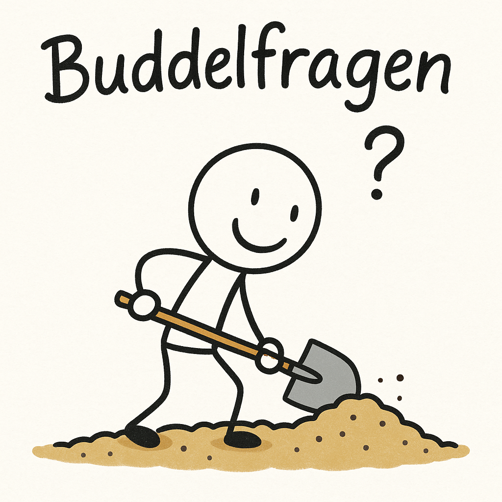

🧭 So funktioniert’s
Du wirst gleich mit einer KI sprechen, die dir hilft, Forscherfragen zu entwickeln. Gehe Schritt für Schritt vor:
- Gib unten dein Thema ein (z. B. Nachhaltige Energie).
- Klicke auf „KI-Dialog starten“.
- Dein Start-Prompt wird automatisch kopiert.
- Fobizz öffnet sich in einem neuen Tab.
- Füge den kopierten Text (Strg + V / Cmd + V) in das Chatfeld ein.
- Starte den Dialog mit der KI.
1. Dein Thema
Wähle das Thema, über das du mit der KI sprechen möchtest.
💭 Buddelfragen
Stell dir für die folgene Aufgabe vor: ihr „buddelt euch mit euren Fragen immer tiefer ins Thema hinein. Jede gute Frage hilft euch, neue Antworten zu entdecken!
2. Arbeitsauftrag nach dem Gespräch
Wenn du mit der KI gesprochen hast, dokumentiere deine wichtigsten Erkenntnisse:
- 🟢 Notiere drei wichtige Punkte aus dem Gespräch mit der KI.
- 🟢 Schreibe auf, was du daraus gelernt oder verstanden hast.
- 🟢 Lade deine Notizen anschließend in die Dokumentations-Kachel in Moodle hoch.
💡 Tipp: Du kannst deine Punkte zuerst in einem Textfeld oder auf einem Zettel sammeln, bevor du sie hochlädst.